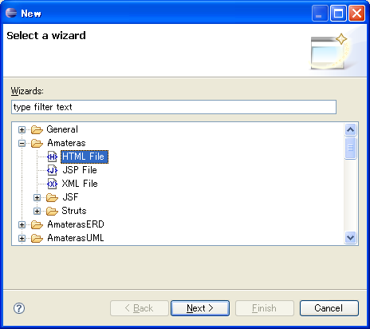
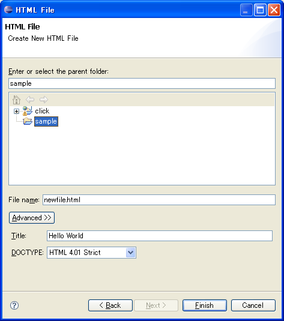
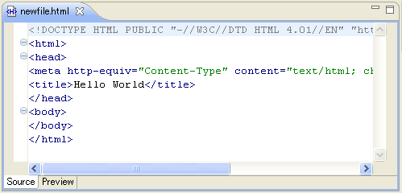
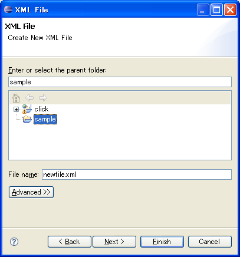
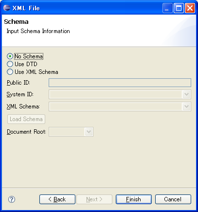
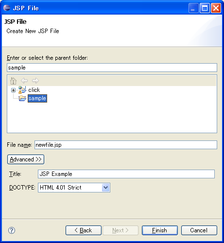
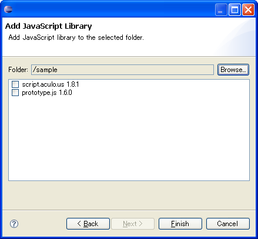

Wizards
EclipseHTMLEditor provides following wizards:
-
From the menubar select File/New/Other....
The wizard dialog appears and select Amateras/HTML File.

-
Click Next, the next page appears. Enter file name, title and DOCTYPE.

-
Click Finish, HTML file will be created and it's opened by the HTML editor.

-
From the menubar select File/New/Other....
The wizard dialog appears and select Amateras/XML File.
Click Next, the next page appears. Enter file name.

-
Click Next and enter schema configuration at the next page.

-
Click Finish, XML file will be created and it's opened by the XML editor.
-
From the menubar select File/New/Other....
The wizard dialog appears and select Amateras/JSP File.
Click Next, the next page appears. Enter file name.

-
Click Finish, JSP file will be created and it's opened by the JSP editor.
-
From the menubar select File/New/Other....
The wizard dialog appears and select Amateras/Add JavaScript Library.
Click Next, the next page appears.
Choose the target folder and JavaScript libraries.

-
Click Finish, checked JavaScript libraries is copied into the chosen folder.